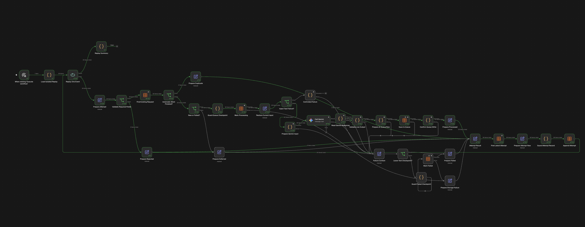

AI Support Triage.
Testing, failure analysis and human review
A workflow that checks each incoming support request, sorts it by topic and drafts a reply from approved help articles. A person reviews every draft before anything is sent. Practice project, tested on 24 made-up requests.
- Sorted right
- 20/20
- Drafts passed
- 19/20
- Review time
- 100→45s
- Bad input Two repeats recorded without overwriting the first draft. Two requests with missing data rejected, with the reason saved.
- Bug found Test #48 reported success, but 22 saved drafts had lost their request number. I traced it, fixed how the number passes between steps and added a check before saving.
- Retest In test #50 I matched every saved draft to its request and confirmed earlier records were intact.
- Honest Review time is from five requests only. Editing time and running costs are not measured yet, and the page says so.
